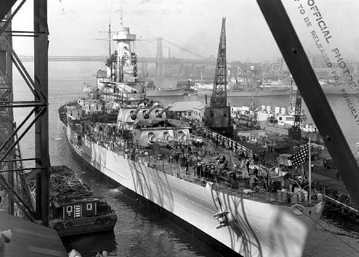
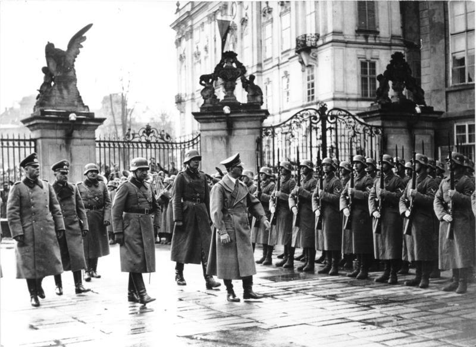

The Japanese invasion of Manchuria began on 18 September 1931, when the Kwantung Army of the Empire of Japan invaded Manchuria immediately following the Mukden Incident. At the war's end in February 1932, the Japanese established the puppet state of Manchukuo. Their occupation lasted until the success of the Soviet Union and Mongolia with the Manchurian Strategic Offensive Operation in mid-August 1945.
On August 31, 1935, Congress passed the first Neutrality Act prohibiting the export of “arms, ammunition, and implements of war” from the United States to foreign nations at war and requiring arms manufacturers in the United States to apply for an export license.
The remilitarization of the Rhineland began on 7 March 1936, when German military forces entered the Rhineland, which directly contravened the Treaty of Versailles and the Locarno Treaties.
The Second London Naval Treaty was an international treaty signed as a result of the Second London Naval Disarmament Conference held in London, the United Kingdom. The conference started on 9 December 1935 and treaty was signed by the participating nations on 25 March 1936.
This date refers to the massacre and imprisonment of Ethiopians by the Italian occupation forces following an attempted assassination of Marshal Rodolfo Graziani, Marquis of Negele, Viceroy of Italian East Africa, on February 19, 1937. This has been described as the worst massacre in Ethiopian history.
The Marco Polo Bridge was a July 1937 battle between China's National Revolutionary Army and the Imperial Japanese Army. The Incident is generally regarded as the start of the Second Sino-Japanese War.
Anschluss, German: “Union”, political union of Austria with Germany, achieved through annexation by Adolf Hitler in 1938. Mooted in 1919 by Austria, Anschluss with Germany remained a hope (chiefly with Austrian Social Democrats) during 1919-33, after which Hitler's rise to power made it less attractive.
The military occupation of Czechoslovakia by Nazi Germany began with the German annexation of the Sudetenland in 1938, continued with the creation of the Protectorate of Bohemia and Moravia, and by the end of 1944 extended to all parts of Czechoslovakia.
The pact states that a non-aggression pact between the German Reich and the Soviet Union is being certified. But also that only the two countries knew that they would invade Poland together, and Stalin would capitulate Latvia, Lithuania and Estonia.
The invasion of Poland was an attack on the Republic of Poland by Nazi Germany and the Soviet Union which marked the beginning of World War II. The German invasion began on 1 September 1939, one week after the signing of the Molotov-Ribbentrop Pact between Germany and the Soviet Union, and one day after the Supreme Soviet of the Soviet Union had approved the pact.
Britain and France entered the Second World War following the German invasion of Poland in September 1939. In expectation of a German advance westwards, the British Expeditionary Force (BEF) deployed alongside the troops of its allies in France and Belgium. For the rest of the winter, there was no fighting. This period of anticipation became known as the "Phoney War".